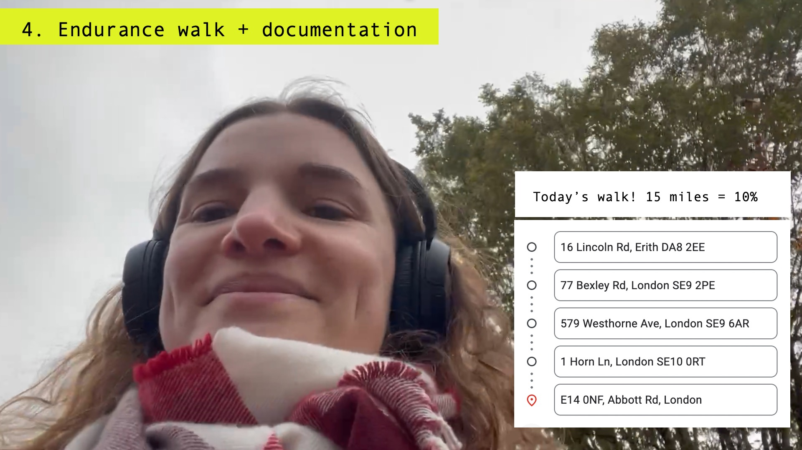
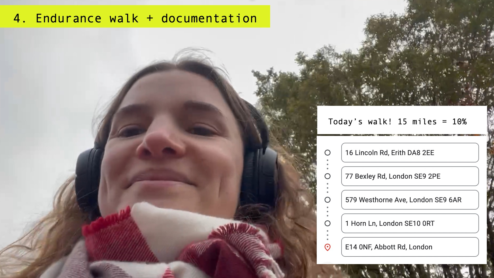

Airways
Campaign concept and speculative production
Even in developed cities like London, air pollution threatens to cause and worsen serious health problems, particularly among vulnerable populations including children. Airways is a proposed campaign for more breathable air. The narrator would complete a journey on foot that joins up 86 air pollution monitoring sites across London, totalling over 150 miles, and do walking interviews with experts and activists. The alternative 'travel log' would draw attention to the 'spaces between' air quality monitoring stations, raising awareness about personal, street-level exposure to air pollution on a daily basis.
> Related research: 'Breathe for Ella: artivism, intersectionality, and sensing air pollution' in Artnodes (Sabin 2024).

 



A complete pitch deck for Airways is available on request. Contact Lucy here